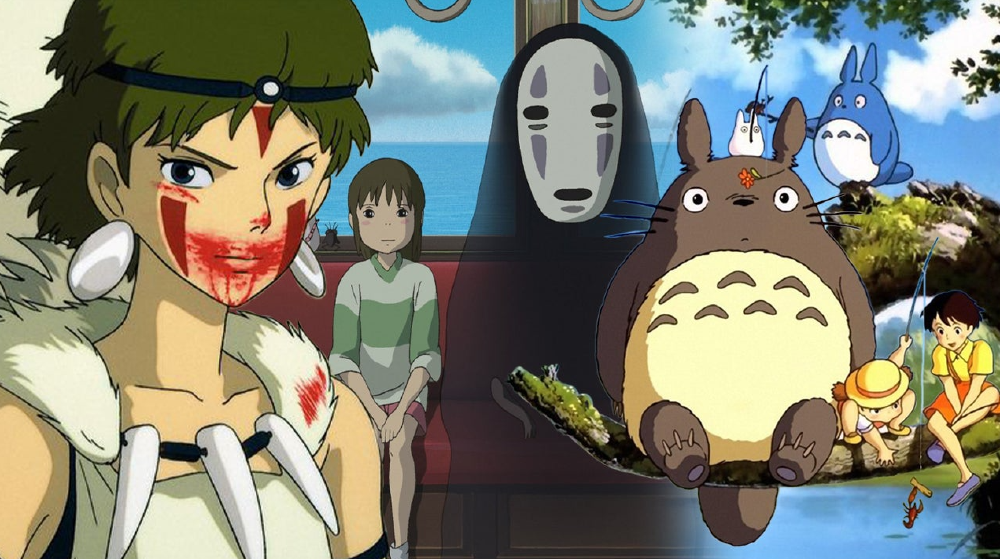

Welcome to Risa Nabari's page for the BEST GHBLI MOVIES!!
Studio Ghibli is a Japanese animation studio directed by Miyazaki Hayao, in Tokyo since 1985. Studio Ghibli movies are renowned for their unique and visually enchanting animation aesthetic. Their commitment to intricate details, hand-drawn aesthetics, beautiful music and meticulous craftsmanship results in a visually rich and immersive cinematic experience. In this wiki, I will be introducing three best movies I recommend that you check out!:
